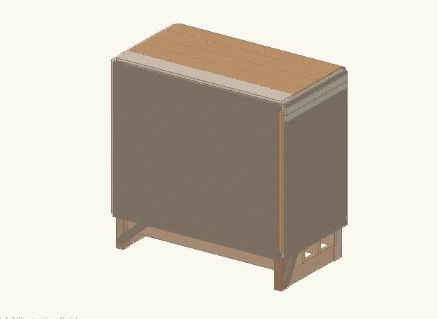
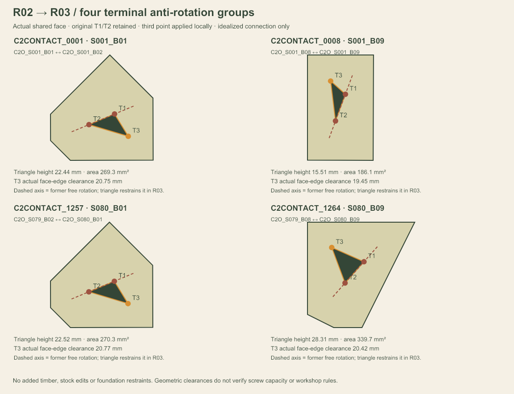

CASE 1 / BUILDING SCALE

Stock becomes building roles.
Posts, joists, deck, cladding and roof are matched to the material and fabrication requirements of each building member.
CASE 1 / BUILDING SCALE

Posts, joists, deck, cladding and roof are matched to the material and fabrication requirements of each building member.
CASE 2 / FURNITURE SCALE

80 changing stations use overlapping rectangular strips. Orientation, spacing and overlap placement create the seat and backrest.
38.10 × 88.90 mm stock section, 76.20 mm repeat pitch. Crosscuts only; no curved-rib CNC or composite blanks.
Short, continuous pieces share parent bars. The recorded 125 mm computational minimum applies to this furniture demonstration.
Geometric overlap is recorded separately from an idealized connection. R03 evaluates the full assembled bench with explicit bearing supports.
Reused: source photos / masks / available reconstruction evidence, preliminary classifications, usable-segment logic, original MILP and part traceability. Selected stock has no active source-matching defect-trim scenario; this does not certify defect-free timber.
Working envelope: 6057.90 × 1458.55 × 592.03 mm. Scale assumption: 100 mm / source-model unit; not physically measured. Source-linked representative appearance is not an exact scanned UV map.
Material balance uses the 238.366 m of selected stock. The 986 untouched inventory slots are separate. No additional ripping, planing or contour-machining loss is recorded.

R02 is retained as mechanism diagnosis. Its invalid force/displacement results are not used for an improvement percentage.
| Load case | Peak |u| | Strip |
|---|---|---|
| Self-weight | 1.279 mm | S040_B01 |
| Self-weight + central TOTAL 1 kN | 1.950 mm | S040_B01 |
| Self-weight + eccentric TOTAL 1 kN | 2.687 mm | S019_B09 |
All cases include self-weight, 3.317 kN. Added seat loads are TOTAL 1 kN per case. Rendered analytical deformation ×50; solid strips stay in the assembled positions.
Saved force / moment balance: PASS. No vertical bearing tension in the three cases.
R03 uses three non-collinear ideal connection points at four terminal overlaps; the other 1,260 groups retain paired ties. Six levelling bearings are unanchored. Fastener capacity and bearing friction remain unverified. Preliminary elastic results are not construction or furniture-standard approval.
Allocation: ALLOC_CASE2_FULL_20261003T072129Z_464628f7
Analysis: CASE2_KARAMBA_20261003T084216Z_R03_TERMINAL_TRIANGLES
Saved bounded cutting-pattern result. No unrestricted global optimum claim. No detection, MILP or Karamba rerun for this presentation edit.
Compact saved-value extract ↓